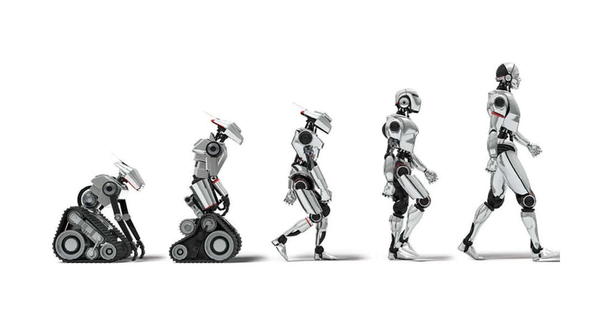

| Historia de la Inteligencia Artificial |
|---|
|
La IA tiene sus raíces en la década de 1950, cuando los primeros investigadores comenzaron a explorar cómo las máquinas podrían imitar la inteligencia humana. Desde entonces, ha habido avances significativos en algoritmos, hardware y aplicaciones, impulsando el crecimiento exponencial de la IA.  |
| Leer más... |
| Aplicaciones de la Inteligencia Artificial |
|---|
|
La IA tiene una amplia gama de aplicaciones en diversos campos, como la medicina, la automoción, las finanzas y más. Desde diagnósticos médicos precisos hasta vehículos autónomos, la IA está transformando la forma en que vivimos y trabajamos. .jpg)
|
| Leer más... |
| Desafíos y Ética en la Inteligencia Artificial |
|---|
|
A medida que la IA se vuelve más omnipresente, surgen desafíos éticos y sociales importantes. Desde preocupaciones sobre la privacidad y la seguridad hasta el impacto en el empleo, es fundamental abordar estos problemas de manera responsable para garantizar un futuro ético y sostenible para la IA. |
| Leer más... |